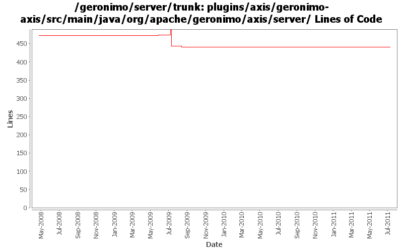

[root]/plugins/axis/geronimo-axis/src/main/java/org/apache/geronimo/axis/server

| Author | Changes | Lines of Code | Lines per Change |
|---|---|---|---|
| Totals | 11 (100.0%) | 68 (100.0%) | 6.1 |
| djencks | 3 (27.3%) | 48 (70.6%) | 16.0 |
| gawor | 3 (27.3%) | 16 (23.5%) | 5.3 |
| kevan | 1 (9.1%) | 2 (2.9%) | 2.0 |
| xuhaihong | 1 (9.1%) | 1 (1.5%) | 1.0 |
| jdillon | 3 (27.3%) | 1 (1.5%) | 0.3 |
GERONIMO-6058 Replace StringBuffer usage with StringBuilder
1 lines of code changed in 1 file:
Fix compiler error caused by OpenEJB update
2 lines of code changed in 1 file:
GERONIMO-4645 use jacc ejb ws auth for jetty6, simplify SOAPHandler interface
0 lines of code changed in 1 file:
GERONIMO-4645 Make ejb ws security more jacc friendly, implement transport guarantees for jetty7 using jacc. See jira for more comments
43 lines of code changed in 1 file:
prefer openejb-jar.xml instead of geronimo-openejb.xml descriptor in ejb ws deployer and pass additional properties object to SoapHandlers
16 lines of code changed in 1 file:
GERONIMO-4553 Make web use of security realms depend on plugin visibility; make console expose the 'global' attribute for configuration (renamed from 'publish'). Also merges in geronimo-security changes from sandbox branches.
5 lines of code changed in 1 file:
support for specifying a list of http methods that should be secured for ejb-based web services (GERONIMO-4015)
0 lines of code changed in 2 files:
More loggers back to static
1 lines of code changed in 1 file:
(GERONIMO-3985) Use SLF4J as the primary logging facade for Geronimo
0 lines of code changed in 2 files: